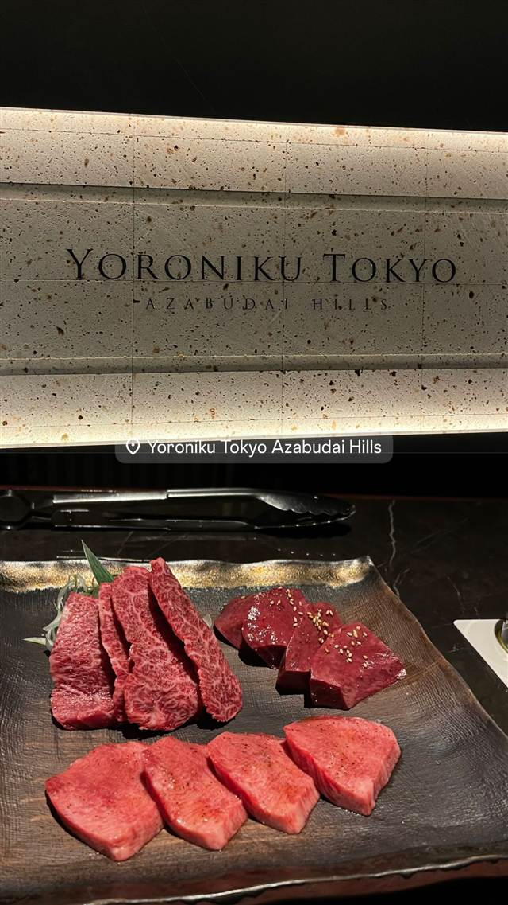

YORONIKU TOKYO AZABUDAI HILLS
元クラブDJが生んだ肉懐石、各卓専用グリルは世界に広まった
Yoroniku Tokyo Azabudai Hills
2007年に南青山・骨董通りで創業した「よろにく」の系列店で、2023年に麻布台ヒルズにオープン。創業者は元クラブDJという異色の経歴を持ち、松茸やトリュフを使った和洋折衷の「肉懐石」というジャンルを生み出した。各卓に専用グリルを置くスタイルは世界の焼肉店にも影響を与えたとされる。
TRIVIA
豆知識
- 創業者は元クラブDJという異色の経歴
- 各テーブルに専用グリルを置くスタイルは世界の焼肉店に広まったとされる
- 2007年の開店時、東京の焼肉に「肉懐石」というジャンルを生み出したと言われる
REVIEWS
世間の評判
4.34食べログ
個室でのフルアテンド焼肉
- スタッフがつきっきりで焼いてくれる完全個室のサービスを評価する声が多い
- トリュフすき焼きなど多彩な部位や食べ方を楽しめるという声もある
- 値段の高さに対して味だけならもっと上のクラスがあるという厳しい声もある
- コースの量が少なく感じて追加で注文が必要になるという声もある
食べログ 口コミ339件
| 創業 | 本店は2007年に南青山（骨董通り）で創業。麻布台ヒルズ店は2023年開業 |
|---|---|
| 系譜 | 南青山本店の系列店。姉妹店に恵比寿の「蕃 YORONIKU」など |
| 看板 | 肉懐石。すき焼き（卵黄・一口ご飯付き）、松茸やトリュフを使った和洋折衷の焼肉 |
| こだわり | 肉の部位ごとに焼き台の温度を変えて焼き分ける独自スタイル。各卓に専用グリルを設置する形式は世界の焼肉店に模倣された |
| どこから | 都心 |
| 営業時間 | 月〜日 17:00-23:00 |
| 予算 | 夜 ¥15,000～¥19,999 |
| 予約 | 予約可 |
| 場所 | 神谷町 東京都港区麻布台1-3-1 麻布台ヒルズ タワープラザ3F |
| メモ | 神谷町駅、麻布台ヒルズ タワープラザ3F。完全個室10室、全52席、17:00〜23:30営業 |
食べたもの：焼肉
NEARBY
近い店・同じ系統の店
-
 ★
焼肉 白金高輪駅
炭焼 金竜山
ロンドン帰りの店主夫妻が焼く上タン塩とシャトーブリアン
夜 ¥20,000～¥29,999
★
焼肉 白金高輪駅
炭焼 金竜山
ロンドン帰りの店主夫妻が焼く上タン塩とシャトーブリアン
夜 ¥20,000～¥29,999
-
 ★
焼肉 関内駅
関内苑 本店
韓国職人仕込みのキムチとA5和牛の手打ち冷麺
昼 ¥1,000～¥1,999
★
焼肉 関内駅
関内苑 本店
韓国職人仕込みのキムチとA5和牛の手打ち冷麺
昼 ¥1,000～¥1,999
-
 ★
焼肉 鶯谷駅
焼肉 鶯谷園
1968年創業、半世紀以上続く良心価格の厚切りタン
夜 ¥6,000～¥7,999
★
焼肉 鶯谷駅
焼肉 鶯谷園
1968年創業、半世紀以上続く良心価格の厚切りタン
夜 ¥6,000～¥7,999
-
 ★
焼肉 不動前
焼肉しみず
牛タンの中心部だけを使う厚切り黒毛和牛タン
夜 ¥10,000～¥14,999
★
焼肉 不動前
焼肉しみず
牛タンの中心部だけを使う厚切り黒毛和牛タン
夜 ¥10,000～¥14,999
-
 ★
焼肉 飯田橋駅
好ちゃん 飯田橋本店
食べログ百名店に6年連続選出されたホルモン焼肉
夜 ¥6,000～¥7,999
★
焼肉 飯田橋駅
好ちゃん 飯田橋本店
食べログ百名店に6年連続選出されたホルモン焼肉
夜 ¥6,000～¥7,999
-
 ★
焼肉 町屋
正泰苑 総本店
ザガット東京焼肉部門1位に輝いた熟成タン
夜 ¥6,000～¥7,999
★
焼肉 町屋
正泰苑 総本店
ザガット東京焼肉部門1位に輝いた熟成タン
夜 ¥6,000～¥7,999